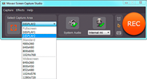
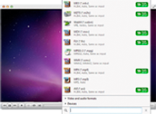
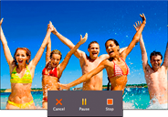

Capture and save Mac screens in any popular

Record screencasts at full screen, including from high resolution Retina displays, or choose any part of the screen. Capture the mouse cursor or exclude it from the recording. Record sounds. Create smooth screencasts for viewing on your Apple devices.
Record live
streamsformat!
streamsformat!

With Movavi screen recorder for Mac you can capture screens at 60 fps speed to get the smoothest video possible. Capture a specific window with an open Flash video player, and don't be afraid to move it while you’re recording – the smart capture frame will follow the window's movements!
Save screen video for Apple or any other deviceformat!

Save files in any popular format, including MP4, so they're fully compatible with Mac OS X as well as any other platform – desktop, laptop, or mobile. You can also encode videos for playback on your iPad, iPhone, iPod, Apple TV, or any other device using the handy ready-made presets.
Capture and save Mac screens in any popular
Record your voice demos through a built-in/USB microphone (no additional software required). Capture audio tracks from online videos and media players, or record system sounds.